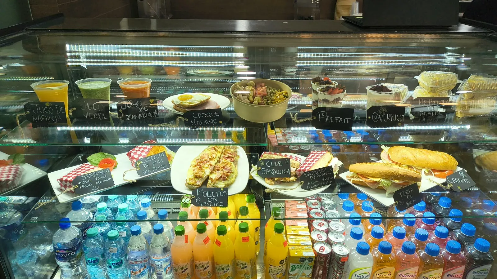

Fiiller Promos
Explorar menú →Descubre nuestras especialidades
Consulta los productos disponibles y elige tus favoritos.
Café, sándwiches, panadería y más. Fresco, rápido y delicioso.

Empieza con nuestros desayunos, cafés y sándwiches. Las bebidas embotelladas y botanas son extras para acompañar tu pedido.
Elige una categoría o escribe el nombre de un producto.